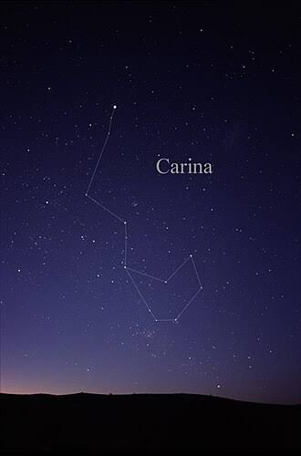
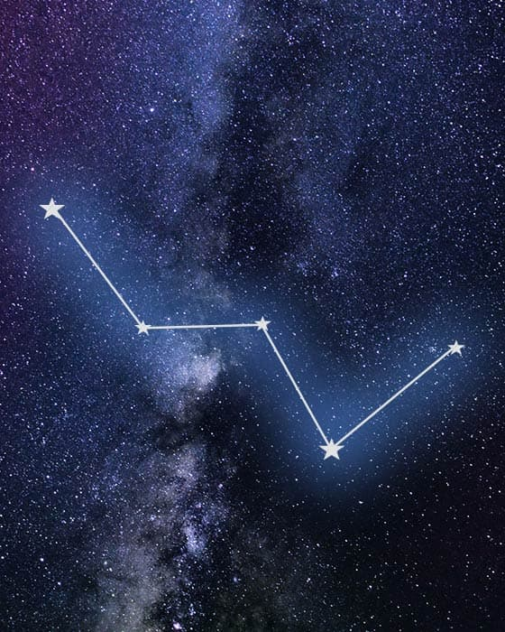
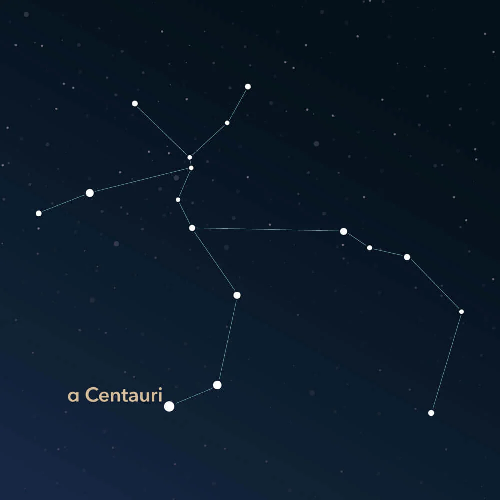
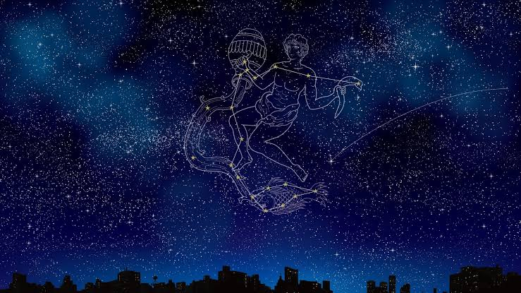
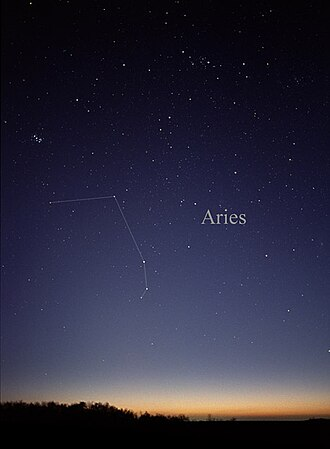
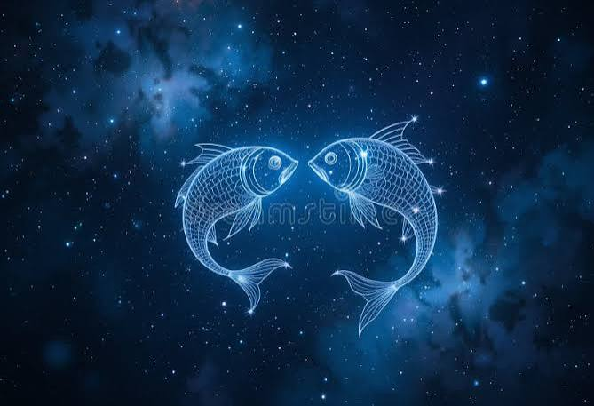
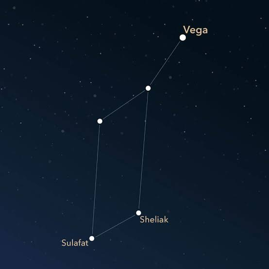
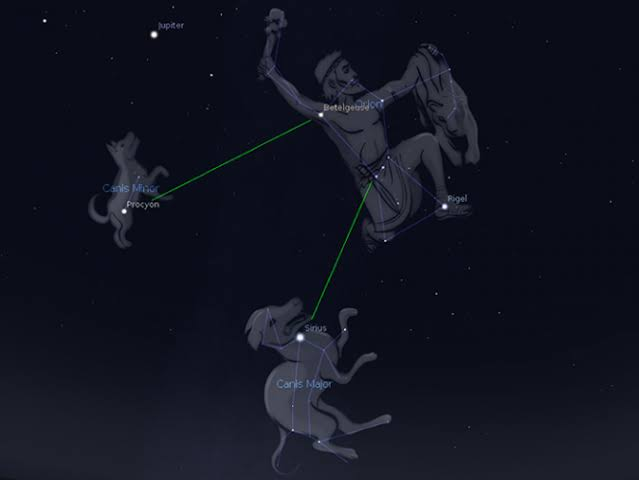
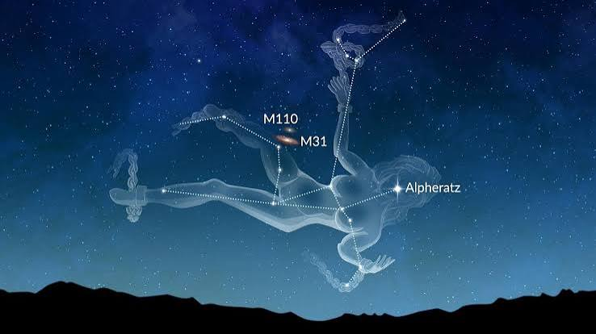

Celestial regions
A constellation is a defined region of the celestial sphere. Its stars may form an animal, figure, object, or imagined scene.
The celestial atlas
Explore the patterns that have guided travelers, inspired storytellers, and shaped our view of the night sky.
Look up — Make a wish, love.
Featured stories
From ancient myths to modern astronomy, constellations turn scattered light into a shared language.
A constellation is a defined region of the celestial sphere. Its stars may form an animal, figure, object, or imagined scene.
Across cultures, people have read the same stars differently, creating patterns rich in local history and meaning.
The IAU recognizes 88 constellations, with official boundaries that divide the entire night sky.
Tonight’s discovery
Aquarius is one of the oldest recognized constellations. It lies in a region once called “The Sea,” alongside Cetus, Pisces, and Eridanus.
1. Always visible



Circumpolar constellations never appear to set below the horizon from certain latitudes. Near the poles, many northern or southern patterns remain visible throughout the night.
2. The ecliptic



Zodiac constellations follow the Sun’s apparent path. Thirteen constellations touch the ecliptic, although traditional astrology primarily uses twelve signs.
3. Time in motion



Seasonal constellations change with Earth’s journey around the Sun. Winter brings Orion, spring reveals Leo, summer lights up Lyra, and autumn introduces Pegasus.